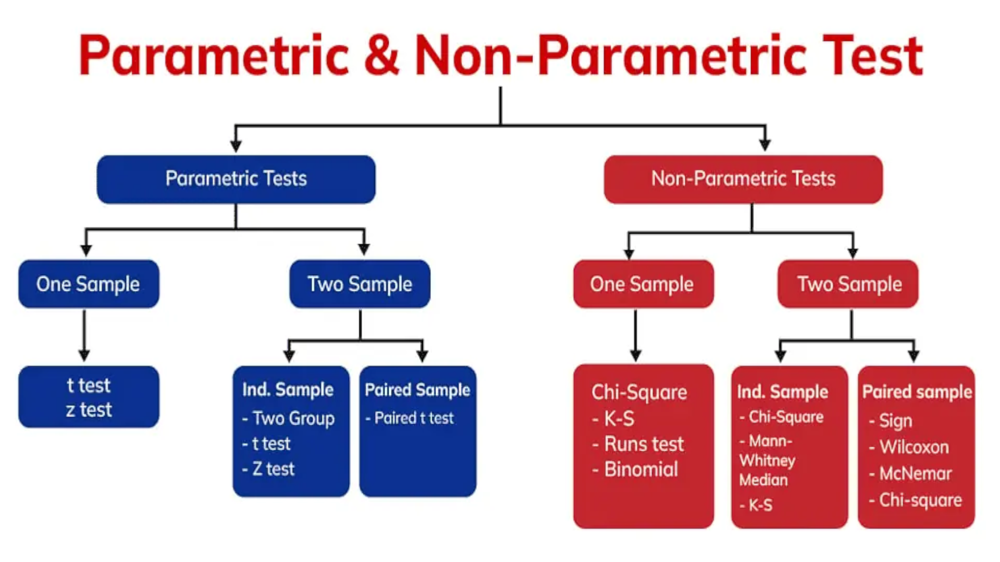
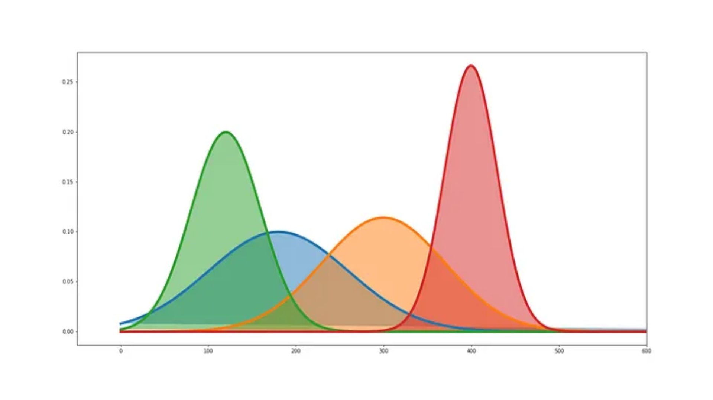
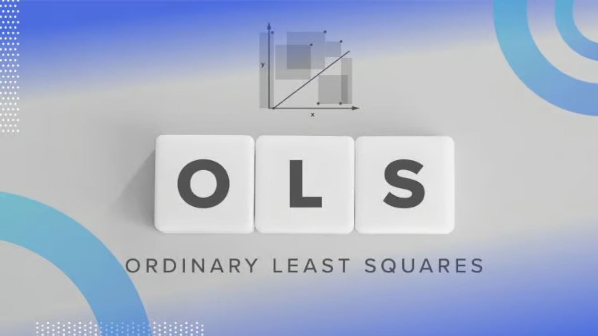
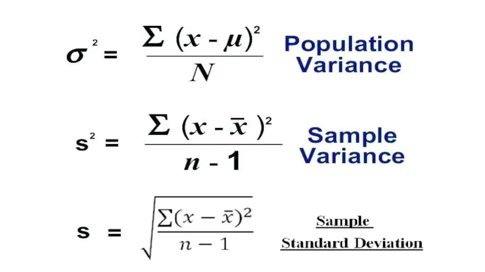

Parametric tests are suitable for evaluating continuous data, but they can be strongly influenced by outliers. On the other hand, non-parametric tests are capable of handling ordinal and ranked data, and they are less sensitive to the presence of outliers.

Maximum Likelihood Estimation (MLE) is a fundamental principle in statistics that has far-reaching applications in various domains, including machine learning, deep learning, and even in the architecture of transformers.

Ordinary Least Squares (OLS) is a cornerstone method in statistics and machine learning used for estimating the parameters of a linear regression model. It minimizes the sum of squared residuals to find the best-fitting line through a set of data points.
